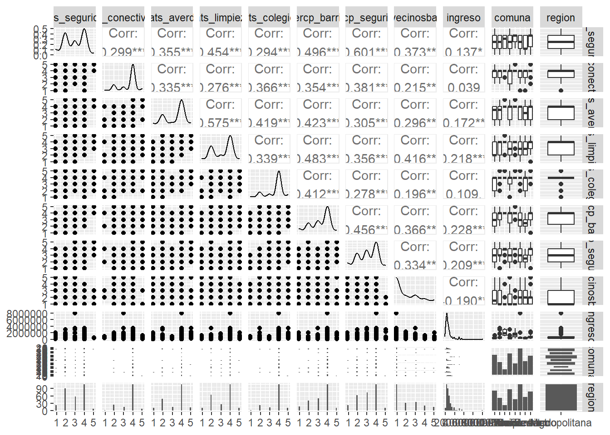

pacman::p_load(sjlabelled,
dplyr, #Manipulacion de datos
stargazer, #Tablas
sjmisc, # Tablas
summarytools, # Tablas
kableExtra, #Tablas
sjPlot, #Tablas y gráficos
corrplot, # Correlaciones
sessioninfo, # Información de la sesión de trabajo
ggplot2,
haven) # Para la mayoría de los gráficos
rm(list=ls()) # borrar todos los objetos en el espacio de trabajo
options(scipen=999) # valores sin notación científica#Cargar base de datos
data <- read_dta("input/ELSOC_W01_v4.01_Stata14.dta")
View(data)
dim(data) #2927 428[1] 2927 428names(data) [1] "idencuesta" "ola" "version" "muestra"
[5] "cuestion_mig" "t01" "t02_01" "t02_02"
[9] "t02_03" "t02_04" "t03_01" "t03_02"
[13] "t03_03" "t03_04" "t04_01" "t04_02"
[17] "t04_03" "t04_04" "t04_05" "t04_06"
[21] "t04_07" "t05" "t06_01" "t06_02"
[25] "t06_03" "t06_04" "t06_05" "t06_06"
[29] "t06_07" "t06_08" "t07_01" "t07_02"
[33] "t08" "t09_01" "t09_02" "t09_03"
[37] "t10" "t11_01" "t11_02" "t11_03"
[41] "t11_04" "r01_01" "r02_01" "r01_02"
[45] "r02_02" "r01_03" "r02_03" "r01_04"
[49] "r02_04" "r01_05" "r02_05" "r01_06"
[53] "r02_06" "r01_07" "r02_07" "r01_08"
[57] "r02_08" "r01_09" "r02_09" "r01_10"
[61] "r02_10" "r01_11" "r02_11" "r01_12"
[65] "r02_12" "r01_13" "r02_13" "r03_01"
[69] "r03_02" "r03_03" "r03_04" "r03_05"
[73] "r03_06" "r03_07" "r03_08" "r04_01"
[77] "r04_02" "r04_03" "r04_04" "r05_01"
[81] "r05_02" "r06" "r07" "r08"
[85] "r09" "r10" "r11" "r12_01"
[89] "r12_02" "r12_03" "r12_04" "r12_05"
[93] "r12_06" "r12_07" "c01" "c02"
[97] "c03" "c04" "c05_01" "c05_02"
[101] "c05_03" "c05_04" "c05_05" "c05_06"
[105] "c05_07" "c05_08" "c06_01" "c06_02"
[109] "c06_03" "c06_04" "c06_05" "c06_06"
[113] "c07_01" "c07_02" "c07_03" "c07_04"
[117] "c07_05" "c07_06" "c07_07" "c07_08"
[121] "c08_01" "c08_02" "c08_03" "c08_04"
[125] "c09_01" "c09_02" "c09_03" "c09_04"
[129] "c10_01" "c10_02" "c10_03" "c11"
[133] "c12_01" "c12_02" "c12_03" "c12_04"
[137] "c12_05" "c12_06" "c12_07" "c12_08"
[141] "c12_09" "c12_09_otro" "c13" "c14_01"
[145] "c14_02" "c15" "c16" "c16_otro"
[149] "c17" "c17_otro" "c18_01" "c18_02"
[153] "c18_03" "c18_04" "c18_05" "c18_06"
[157] "c18_07" "c18_08" "c18_09" "c18_10"
[161] "c18_11" "c19_01" "c19_02" "c19_03"
[165] "c19_04" "c20" "c20_otro" "c21_01"
[169] "c21_02" "c21_03" "c21_04" "c21_05"
[173] "c21_06" "c21_07" "c21_08" "c21_09"
[177] "c21_10" "c21_11" "c22" "c23"
[181] "c24" "c25" "c26" "c27"
[185] "c28" "c29" "c30" "c31"
[189] "c32_01" "c32_02" "c33" "c34"
[193] "c35_01" "c35_02" "c35_03" "c35_04"
[197] "d01_01" "d01_02" "d01_03" "d02_01"
[201] "d02_02" "d02_03" "d03_01" "d03_02"
[205] "d04_01" "d04_02" "d05_01" "d05_02"
[209] "d05_03" "d05_04" "d06" "d07"
[213] "d08" "d09" "d10" "d11"
[217] "d12" "d13" "d14" "d15"
[221] "d16" "d17" "d18" "d19"
[225] "f01_01" "f01_02" "f01_03" "f01_04"
[229] "f01_05" "f01_06" "f01_07" "f02_01"
[233] "f02_02" "f02_03" "f02_04" "f03_01"
[237] "f03_02" "f04_01" "f04_02" "f05_01"
[241] "f05_02" "f05_03" "f05_04" "f05_05"
[245] "f05_06" "f05_07" "f05_08" "f06_01"
[249] "f06_02" "s01" "s02" "s03"
[253] "s04" "s05" "s06" "s07"
[257] "s08" "s09" "s10" "s11_01"
[261] "s11_02" "s11_03" "s11_04" "s11_05"
[265] "s11_06" "s11_07" "s11_08" "s11_09"
[269] "s12" "s13_01" "s13_02" "s13_03"
[273] "s13_04" "s13_05" "s13_06" "s13_07"
[277] "s13_08" "s14" "m0_sexo" "m0_edad"
[281] "m01" "m02" "m03" "m04"
[285] "m05" "m06" "m07" "m08"
[289] "m09" "m10" "m11" "m12"
[293] "m13" "m14" "m15" "m16"
[297] "m17" "m18" "m18_otro" "m19"
[301] "m20" "m21" "m22" "m23"
[305] "m24" "m25" "m26" "m27"
[309] "m28" "m29" "m30" "m31_01"
[313] "m31_02" "m31_03" "m31_04" "m32"
[317] "m33" "m33_otro" "m34_01" "m34_02"
[321] "m34_03" "m35" "m36" "m36_otro"
[325] "m37_01" "m37_02" "m38" "m38_otro"
[329] "m39" "m40_01" "m40_02" "m40_comuna"
[333] "m40_pais" "m41" "m42_01" "m42_02"
[337] "m42_03" "m42_04" "m42_04_otro" "m43"
[341] "m44" "m45" "m45_otro" "cod_m03"
[345] "cod_m04" "cod_m22" "cod_m23" "nhogar1"
[349] "nhogar2" "miembro01_sexo" "miembro01_edad" "miembro02_sexo"
[353] "miembro02_edad" "miembro03_sexo" "miembro03_edad" "miembro04_sexo"
[357] "miembro04_edad" "miembro05_sexo" "miembro05_edad" "miembro06_sexo"
[361] "miembro06_edad" "miembro07_sexo" "miembro07_edad" "miembro08_sexo"
[365] "miembro08_edad" "miembro09_sexo" "miembro09_edad" "miembro10_sexo"
[369] "miembro10_edad" "miembro11_sexo" "miembro11_edad" "miembro12_sexo"
[373] "miembro12_edad" "miembro13_sexo" "miembro13_edad" "region"
[377] "region_cod" "comuna" "comuna_cod" "ponderador01"
[381] "ponderador02" "fact_exp01" "fact_exp02" "estrato"
[385] "segmento" "n_visitas_entr" "prob_entr" "prob_n_entr"
[389] "annio_entr" "mes_entr" "dia_entr" "mod_t_dur"
[393] "mod_r_dur" "mod_c_dur" "mod_d_dur" "mod_f_dur"
[397] "mod_s_dur" "mod_m_dur" "cierre_dur" "estim_dur"
[401] "superv" "tipo_superv" "annio_superv" "mes_superv"
[405] "dia_superv" "idencuestador" "varios_enc" "sexo_enc"
[409] "annio_enc" "mes_enc" "dia_enc" "civil_enc"
[413] "nac_enc" "comuna_car_enc" "comuna_enc" "educ_enc"
[417] "estudios_enc" "estado_educ_enc" "ies_enc" "nombre_ies_enc"
[421] "trabaja_enc" "motivo_enc" "exp_campo_enc" "exp_n_campo_enc"
[425] "exp_capi_enc" "exp_n_capi_enc" "exp_annio_enc" "capacita_enc" proc_data <- data %>% select(t06_02,
t06_03,
t06_04,
m29,
comuna,
region)
view(proc_data)x must either be a summarytools object created with freq(), descr(), or a list of summarytools objects created using by()sjmisc::descr(proc_data)
## Basic descriptive statistics
var type label
t06_02 numeric Grado de satisfaccion: Conectividad
t06_03 numeric Grado de satisfaccion: Areas verdes y de recreacion disponibles
t06_04 numeric Grado de satisfaccion: Limpieza y belleza del barrio
m29 numeric Ingreso total del hogar (monto)
n NA.prc mean sd se md trimmed
2927 0 -0.67 62.11 1.15 4 -0.67
2927 0 2.18 28.54 0.53 4 2.18
2927 0 2.25 29.77 0.55 4 2.25
2927 0 1980741.74 74096130.04 1369569.78 350000 1980741.74
range iqr skew
1004 (-999-5) 1 -14.38
893 (-888-5) 2 -31.13
1004 (-999-5) 2 -31.29
4000000999 (-999-4000000000) 480000 53.74proc_data <- proc_data %>% rename("sats_conec"=t06_02, # Satisfacción conectividad
"sats_averde"=t06_03, # Satisfacción área verde
"sats_limpieza"=t06_04, # Satisfacción Limpieza
"ingreso"=m29) # Ingresos total del hogar
names(proc_data)[1] "sats_conec" "sats_averde" "sats_limpieza" "ingreso"
[5] "comuna" "region" proc_data <- proc_data %>% dplyr::filter(region == "Metropolitana") # Filtrar por región (
proc_data <- filter(proc_data, comuna %in% c("Providencia",
"Colina",
"Las Condes",
"Vitacura",
"Santiago",
"Renca",
"La Pintana",
"Macul"))
sjmisc::descr(proc_data,
show = c("label","range", "mean", "sd", "NA.prc", "n"))%>%
kable(.,"markdown")| var | label | n | NA.prc | mean | sd | range | |
|---|---|---|---|---|---|---|---|
| 3 | sats_conec | Grado de satisfaccion: Conectividad | 230 | 0 | 3.730435 | 0.8127987 | 4 (1-5) |
| 2 | sats_averde | Grado de satisfaccion: Areas verdes y de recreacion disponibles | 230 | 0 | 3.456522 | 0.9780678 | 4 (1-5) |
| 4 | sats_limpieza | Grado de satisfaccion: Limpieza y belleza del barrio | 230 | 0 | 3.156522 | 1.0497769 | 4 (1-5) |
| 1 | ingreso | Ingreso total del hogar (monto) | 230 | 0 | 675784.717391 | 721871.3309944 | 3500999 (-999-3500000) |
summarytools::dfSummary(proc_data, plain.ascii = FALSE)### Data Frame Summary
#### proc_data
**Label:** Estudio Longitudinal Social de Chile. Ola 2016. Version 4.00 (10/06/2020)
**Dimensions:** 230 x 6
**Duplicates:** 26
------------------------------------------------------------------------------------------------------------------------------------------------------------------------------------------
No Variable Label Stats / Values Freqs (% of Valid) Graph Valid Missing
---- -------------------------------------- ------------------------------------------ ---------------------------------- -------------------- ---------------------- ---------- ---------
1 sats_conec\ Grado de satisfaccion: Conectividad Mean (sd) : 3.7 (0.8)\ 1 : 4 ( 1.7%)\ \ 230\ 0\
[haven_labelled, vctrs_vctr, double] min < med < max:\ 2 : 24 (10.4%)\ II \ (100.0%) (0.0%)
1 < 4 < 5\ 3 : 19 ( 8.3%)\ I \
IQR (CV) : 0 (0.2) 4 : 166 (72.2%)\ IIIIIIIIIIIIII \
5 : 17 ( 7.4%) I
2 sats_averde\ Grado de satisfaccion: Areas verdes y de Mean (sd) : 3.5 (1)\ 1 : 6 ( 2.6%)\ \ 230\ 0\
[haven_labelled, vctrs_vctr, double] recreacion disponibles min < med < max:\ 2 : 50 (21.7%)\ IIII \ (100.0%) (0.0%)
1 < 4 < 5\ 3 : 20 ( 8.7%)\ I \
IQR (CV) : 1 (0.3) 4 : 141 (61.3%)\ IIIIIIIIIIII \
5 : 13 ( 5.7%) I
3 sats_limpieza\ Grado de satisfaccion: Limpieza y Mean (sd) : 3.2 (1)\ 1 : 12 ( 5.2%)\ I \ 230\ 0\
[haven_labelled, vctrs_vctr, double] belleza del barrio min < med < max:\ 2 : 66 (28.7%)\ IIIII \ (100.0%) (0.0%)
1 < 4 < 5\ 3 : 35 (15.2%)\ III \
IQR (CV) : 2 (0.3) 4 : 108 (47.0%)\ IIIIIIIII \
5 : 9 ( 3.9%)
4 ingreso\ Ingreso total del hogar (monto) Mean (sd) : 675784.7 (721871.3)\ 59 distinct values \ \ :\ 230\ 0\
[haven_labelled, vctrs_vctr, double] min < med < max:\ \ \ : .\ (100.0%) (0.0%)
-999 < 500000 < 3500000\ . : :\
IQR (CV) : 687500 (1.1) : : :\
: : : : . \ \ .
5 comuna\ Comuna 1\. Colina\ 57 (24.8%)\ IIII \ 230\ 0\
[character] 2\. La Pintana\ 33 (14.3%)\ II \ (100.0%) (0.0%)
3\. Las Condes\ 15 ( 6.5%)\ I \
4\. Macul\ 19 ( 8.3%)\ I \
5\. Providencia\ 28 (12.2%)\ II \
6\. Renca\ 17 ( 7.4%)\ I \
7\. Santiago\ 60 (26.1%)\ IIIII \
8\. Vitacura 1 ( 0.4%)
6 region\ Region 1\. Metropolitana 230 (100.0%) IIIIIIIIIIIIIIIIIIII 230\ 0\
[character] (100.0%) (0.0%)
------------------------------------------------------------------------------------------------------------------------------------------------------------------------------------------view(dfSummary(proc_data, headings=FALSE)) #Tabla como imagenSwitching method to 'browser'Output file written: C:\Users\arell\AppData\Local\Temp\Rtmp6RkQEG\file6c5c2cf82d3b.htmlsum(is.na(proc_data))[1] 0proc_data <- proc_data %>%
filter_all(all_vars(!is.na(.) & . != -999 & . != -888)) #Filtrar NA'S
proc_data %>% ggplot(aes(x = sats_conec)) +
geom_bar()Don't know how to automatically pick scale for object of type
<haven_labelled/vctrs_vctr/double>. Defaulting to continuous.
proc_data %>% ggplot(aes(x = sats_averde)) +
geom_bar()Don't know how to automatically pick scale for object of type
<haven_labelled/vctrs_vctr/double>. Defaulting to continuous.proc_data %>% ggplot(aes(x = sats_limpieza)) +
geom_bar()Don't know how to automatically pick scale for object of type
<haven_labelled/vctrs_vctr/double>. Defaulting to continuous.proc_data %>% ggplot(aes(x = sats_conec)) +
geom_bar(fill = "coral")+
labs(title = "Satisfacción Conectividad",
x = "Satisfacción Conectividad",
y = "Frecuencia")Don't know how to automatically pick scale for object of type
<haven_labelled/vctrs_vctr/double>. Defaulting to continuous.proc_data %>% ggplot(aes(x = sats_averde)) +
geom_bar(fill = "coral")+
labs(title = "Satisfacción área verde",
x = "Satisfacción área verde",
y = "Frecuencia")Don't know how to automatically pick scale for object of type
<haven_labelled/vctrs_vctr/double>. Defaulting to continuous.proc_data %>% ggplot(aes(x = sats_limpieza)) +
geom_bar(fill = "coral")+
labs(title = "Satisfacción Limpieza",
x = "Satisfacción Limpieza",
y = "Frecuencia")Don't know how to automatically pick scale for object of type
<haven_labelled/vctrs_vctr/double>. Defaulting to continuous.